태백산 천제단은 대한민국 강원특별자치도 태백시 태백산에 있는 제단이다.
편마암으로 축조된 장방총 석단으로 높이는 2m, 둘레 20m이다.
단의 남쪽에는 제단으로 오르내릴 수 있는 계단이 있다.
1991년 10월 23일 대한민국의 국가민속문화재 제228호로 지정되었다.
 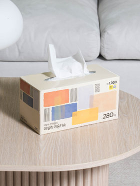
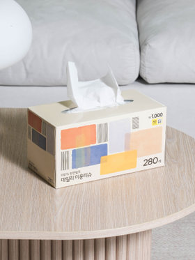
 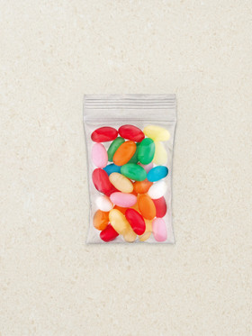
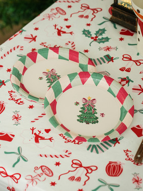
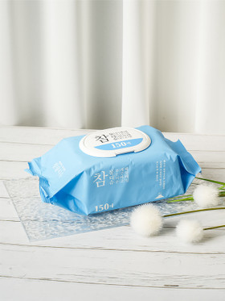
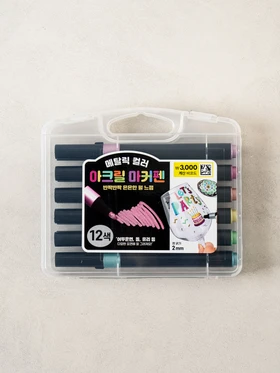
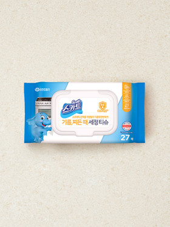
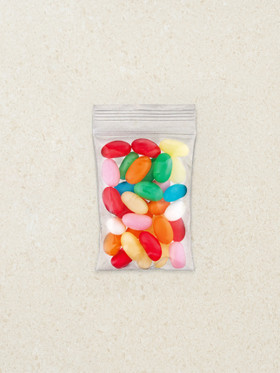
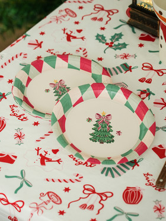
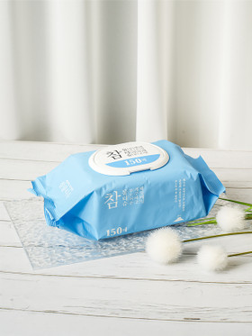
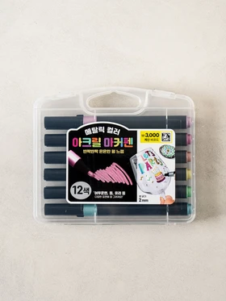
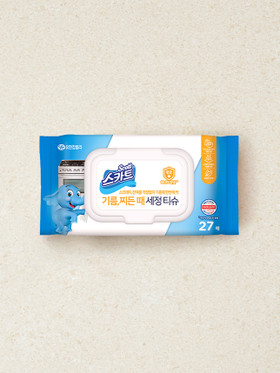
| 월요일 | 화요일 | 수요일 | 목요일 | 금요일 |
|---|---|---|---|---|
| 과학 | 수학 | 음악 | 미술 | 체육 |
| 과학 | 수학 | 음악 | 미술 | 체육 |
| 과학 | 수학 | 음악 | 미술 | 체육 |